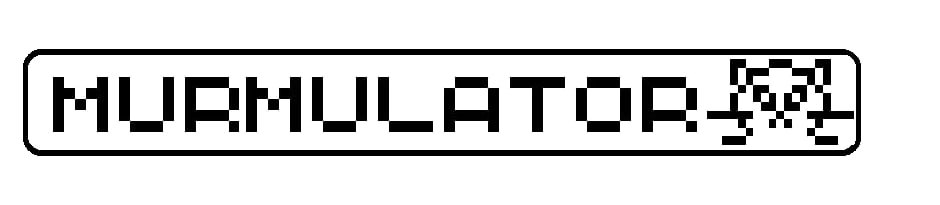
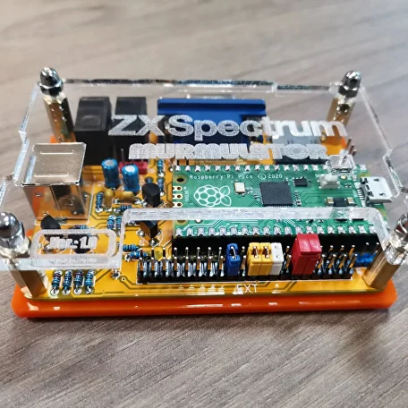
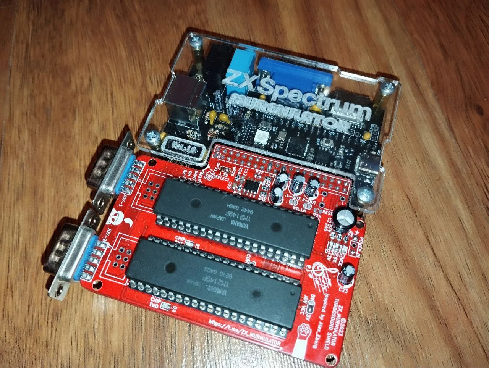
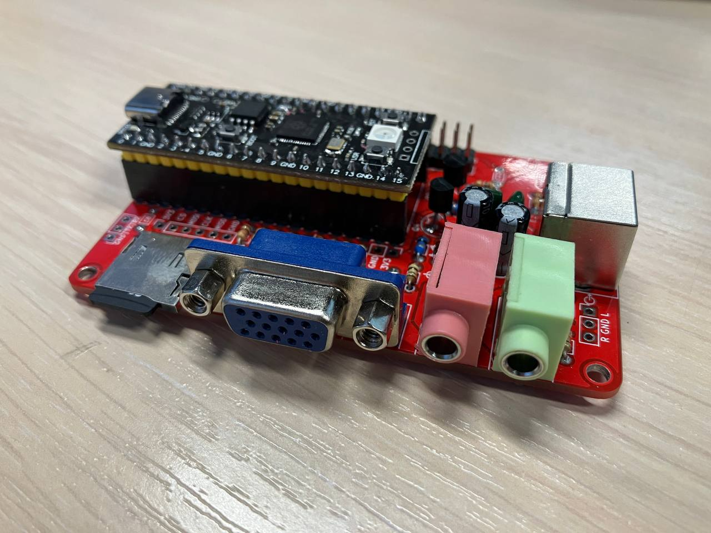
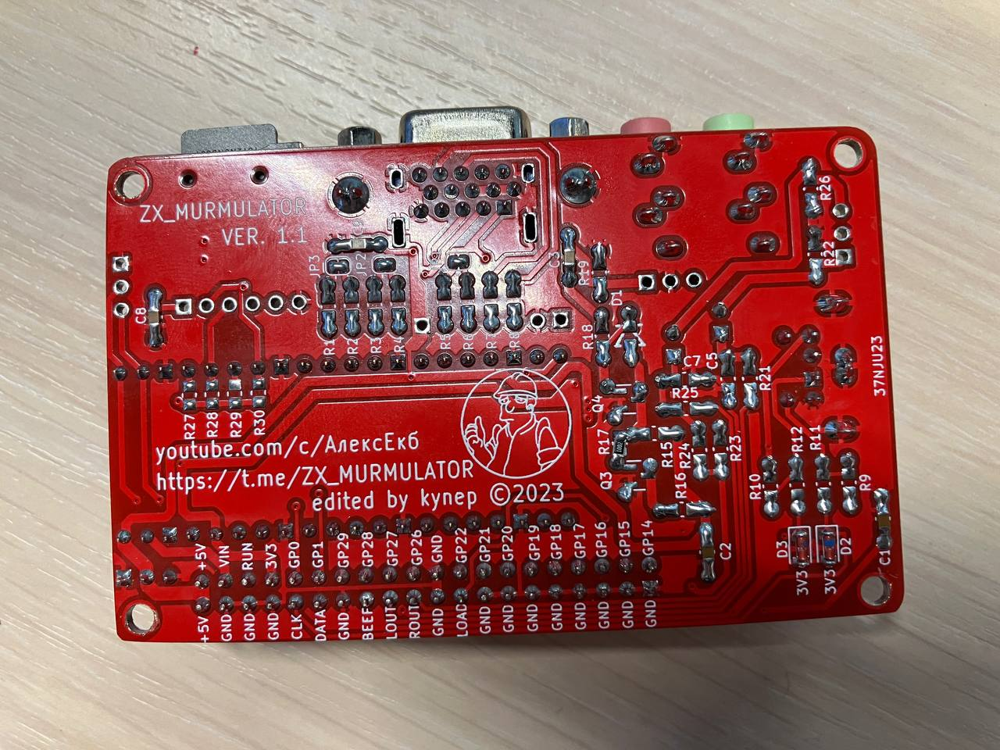
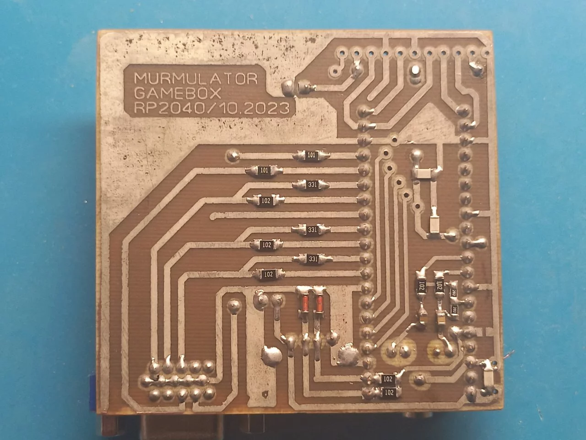
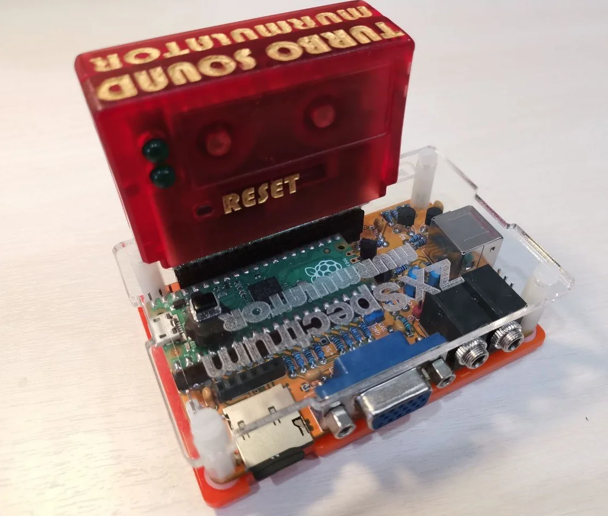

What it can do
What types are there
How to make
Firmwares
Games
RGB to VGA/HDMI
FAQ
Murmulator
Device for retrosystems murmulatation
A lot of supported retrosystems
Gerber files and open sources firmare
Easy self-made device
Low-cost solution






The project creator, who implemented first hardware and firmware to emulate ZX Spectrum
@Alex_Eburg